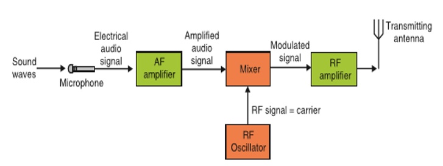

Physics is one of the disciplines of natural science that studies about the various aspects of the matters and energy. The major topics those are studied in physics are mechanics, electricity, magnetism, heat, sound, light and other radiation, and the structure of atoms. In addition, physics also explains the evolution, structure, and functions of various elements of the universe.
Origins of the power used for transportation, for heat and light in dwelling and working areas, and for the manufacture of goods of all kinds, among other applications. The development of science and civilization is closely linked to the availability of energy in useful forms. Modern society consumes vast amounts of energy in all forms: light, heat, electrical, mechanical, chemical, and nuclear. The rate at which energy is produced or consumed is called power, although this term is sometimes used in common speech synonymously with energy.
In addition, the most easily accessed geothermal resources, natural hot springs and geysers, will not last for more than a few decades if exploited for energy on a large scale. Estimates vary widely as to how long fossil fuels, oil, coal, and natural gas will last. These estimates depend on assumptions about how much fossil fuel remains in the ground, how fast it will be used, and how much money and effort will be spent to recover it. However, most estimates agree that, if present rates of consumption continue, proven oil and natural gas reserves will run out in this century, while coal reserves will last more than 200 years. Once they are used, these energy sources cannot be replaced.
Identify types of energy according to the sources
-
Fossil fuel
-
Nuclear fuel

Most nuclear fuel heavy fissil elements that are capable of nuclear fission. when these fuels are struck by neautrons, they are in turn capable of emiting neautrons when they break apart. this makes possible a self-sustaining chain reaction that releases energy with a controlled rate in a nuclear reactor or with a very rapid uncontrolled rate in nuclear weapon
Gravitation based on Newton's Law
Gravity is the mysterious force that makes everything fall down towards the Earth. But after research it has turned out that all objects have gravity. It’s just that some objects, like the Earth and the Sun, have a stronger gravity than others. How much gravity an object has depends its mass. It also depends on how close you are to the object. The closer you are, the stronger the gravity.
Gravity is very important to our everyday lives. Without Earth’s gravity we would fly right off it. If you kicked a ball, it would fly off forever. While it might be fun to try for a few minutes, we certainly can’t live without gravity. Gravity also is important on a larger scale. It is the Sun’s gravity that keeps the Earth in orbit around the Sun. Life on Earth needs the Sun’s light and warmth to survive. Gravity helps the Earth to stay at just the right distance from the Sun, so it’s not too hot or too cold.
NEWTON’S LAW OF GRAVITATION
This is also called the universal law of gravitation or inverse square law. It states that “the gravitational force of attraction between two masses m1 and m2 is directly proportional to the product of masses and inversely proportional to the square of their mean distance apart.”

Properties of Gravitation Force
- It is independent of the medium between the particles while electric and magnetic forces depend on the nature of the medium between the particles.
- It holds good over a wide range of distances. It is found true for interplanetary to interatomic distances.
- It is a central force, i.e. it acts along the line joining the centres of two interacting bodies.
- It is a two-body interaction, i.e. gravitational force between two particles is independent of the presence or absence of other particles; so, the principle of superposition is valid, i.e. force on a particle due to number of particles is the resultant of forces due to individual particles
- On the contrary, nuclear force is a many-body interaction.

Planetary motion according to Kepler’s laws
KEPLER’S LAWS OF PLANETARY MOTION
Planets are large natural bodies rotating around a star in definite orbits. The planetary system of the star sun, called solar system, consists of nine planets. mercury, venus, earth, mars, jupiter, saturn, uranus, neptune and pluto. Out of these planets mercury is the smallest, closest to the sun. jupiter is the largest and has the maximum number of moons. Venus is closest to the earth and the brightest planet. Kepler, after a life time study, worked out three empirical laws which govern the motion of these planets and are known as Kepler’s laws of planetary motion.
1st Law This law called the law of orbits and state that planets move in ellipse with the sun as one of thier force, it can also be stated as planets describe ellipses about the sun as one focus.

2rd Law This law called the law of areas and state that the line joining the sun and the planet sweeps out equal areas in equal period on time. According to the law, if the time taken to move from A to B equal the time from C to D. Then S 1 = S 2

3rd Law This law of period states that the square of the period T of revolution of any planet is proportional to the cube of it means distance R from the sum
VERIFICATION OF KEPLER’S THIRD LAW OF PLANETARY MOTION
- Assuming that a planet’s orbit is circular (which is not exactly correct but is a good approximation in most cases), then the mean distance from the sun is constant –radius. Suppose, a planet of mass m2 moving around the sun of mass m1. If the motion of the planet is circular, there are two types of forces:
- (a) Gravitational force of attraction F1 between the sun and the planet.
-
b) Cetripetal force F2 responsible for keeping the planet moving in circular motion
aroung the sun

For the planet to move around the sun in orbit of constant radius F1 = F2
Interpret concepts based on transmission system
Transmission system:
The communication is the way of expressing our thoughts. In other words, communication means sending or receiving message from one end to other. We can express our feelings to others by speaking, writing or silent indications. All living beings communicate to each other in different ways. They have different types of voices and they understand meaning of voice of their species. Human has also developed his dialect to communicate with others. We learn different languages to understand meaning of other’s dialects.
Devices used to talk, or to send message one end to other, or from one person to other are called means of communication. Means of Communication are the most necessary part of modern lifestyle. In modern age, there are many types of means of communications like newspaper, Telephone, Mobile, TV, Internet etc. They play very important role in our daily life activities. This concept is closely related to the concepts of blood circulation (in Biology and Medicine), transport networks, transmission of information etc.
Description of terms used in transmission system
In telecommunication, a communication system is a collection of individual communication networks, transmission systems, relay stations tributary stations and Data Terminal Equipment (DTE) usually capable of interconnection and interoperation to form an integrated whole.In the transmission section, first of all, the source generated information is fed to the input transducer, which converts energy of one form to another form, usually in electrical form. This electrical signal or base band signal is sent to the transmitter.
Transmitter: Transmitter modifies the information signal for
efficient transmission. It modulates the information signal with a high frequency carrier.
After processing the signal transmitter transmits the signal, through channel to the receiver.
Channel: Channel, media or path implies the medium through which
the message travels from the transmitter to the receiver. A channel acts partly as a filter to
attenuate the signal and distorts its waveform. The signal attenuation increases with the length
of the channel. There are different types of channels for different communication systems, such as
wire, coaxial cable, wave-guide, optical fiber or radio link through which transmitter output is sent.
Receiver: Receiver reprocesses the signal received from the channel by undoing
the signal modifications made at the transmitter and the channel. The receiver output is fed to the output
transducer, which converts the electrical signal to its original form. By this way, the signal reached to
its destination, to which the message is communicated.
Digital communication: Digital communication system exchange (both transmit and receive)
information to /from digital sources. A digital (information) source produces a finite set of possible messages.
Typewriter is a good example of a digital source. There is a finite no. of characters that can be emitted by this source.
Analog communication: Analog communication system exchange
(both transmit and receive) information to /from analogue sources.
A microphone is a good example of an analogue source. An analogue information source produces messages that are defined on a continuum.
Why do we use digital not analogue?
Digital communication has a number of advantages:- Relatively inexpensive digital circuits may be used.
- Digital systems are relatively easy to design and can be fabricated on IC chips.
- Information storage is easy.
- Operation can be programmable to update with newly upcoming technologies.
- Privacy is preserved by using data encryption
- Greater dynamic range is possible
- Data from voice, video and data sources may be merged and transmitted over a common digital transmission system. i.e. it is easy to multiplex several digital signals
- In long distance communication system, noise does not accumulate from repeater to repeater.
- Error detection and correction schemes can be employed by using coding techniques.
Limitations of Digital communication system
Generally, more bandwidth is required than that for analogue system.- Synchronization is required, which calls for more sophisticated device and costs more. A/D converter We use analogue to digital converter, to convert analogue signals to digital signals.
Sampling In this process, Continuous-time signal is converted to
Discrete-time signal obtained by taking samples of the continuous-time signal at discrete-time instants.
Quantization In this process, a Discrete-time Continuous-
valued signal is converted into a Discrete-time Discrete-valued (digital) signal.
The sampled signal is rounding off to the fourth nearest value which is permitted
for transmission by the system. The process of rounding off is called Quantization,
while the possible levels permitted for transmission are called Quantizing levels.
Coding
In the coding process, each discrete value is represented by 8-bit binary sequence e.g. 10010101.
It consists of combinations of 0 and 1.
Describe Principle of cellular radio and Structure of cellular network.
The cellular concept was a major breakthrough in solving the problem of spectral congestion and user capacity. It offered very high capacity output in a limited spectrum allocation without any major technological changes. The cellular concept is a system-level idea which calls for replacing a single, high power transmitter (large cell) with many low power transmitters (small cells), each providing coverage to only a small portion of the service area. Each base station is allocated a portion of the total number of channels available to the entire system, and nearby base stations are assigned different groups of channels so that all the available channels are assigned a relatively small number of neighbouring base stations.
Principle of cellular radio and Structure of cellular network
Neighbouring base stations are assigned different groups of channels so that the
interference between base stations (and the mobile users under their control) is
minimized.
By systematically spacing base stations and their channel groups throughout a market,
the available channels are distributed throughout the geographic region and may be reused
as many times as necessary so long as the interference between co-channel stations is kept
below acceptable levels.
Illustration of structure of cellular network.
An overall cellular network contains a number of different elements from the base transceiver station (BTS) itself with its antenna back through a base station controller (BSC), and a mobile switching centre (MSC) to the location registers (HLR and VLR) and the link to the public switched telephone network (PSTN). Of the units within the cellular network, the BTS provides the direct communication with the mobile phones. There may be a small number of base stations linked to a base station controller. This unit acts as a small centre to route calls to the required base station, and it also makes some decisions about which base station is the best suited for a particular call.
Identify types of modulations (AM, FM, and PM) based on communication systems.
Modulation is a technique used for encoding information into a RF channel. Typically the process of modulation combines an information signal with a carrier signal to create a new composite signal that can be transmitted over a wireless link. In theory, a message signal can be directly sent into space to a receiver by simply powering an antenna with the message signal. However, message signals typically don’t have a high enough bandwidth to make efficient direct propagation. In order to efficiently transmit data, the lower frequency data must be modulated onto a higher frequency wave.

The high frequency wave acts as a carrier that transmits the data through space
to the receiver where the composite wave is demodulated and the data is recovered.
There are a few general types of modulation; Frequency Modulation (FM), Phase
Modulation (PM) and Amplitude modulation (AM).
This is a kind of modulation which is used in every high broadcasts. The frequency of the carrier is altered at a rate equal to the frequency of the audio frequency but the amplitude remains constant.

Frequency modulation is widely used for FM radio broadcasting. It is also used in telemetry, radar, seismic prospecting monitoring new-borns (for seizures via Electroencephalography), two-way radio systems, music synthesis, magnetic tape-recording systems and some video-transmission systems. In radio transmission, an advantage of frequency modulation is that it has a larger signal-to-noise ratio and therefore rejects radio frequency interference better than an equal power amplitude modulation (AM) signal. For this reason, most music is broadcast over FM radio.
Amplitude modulation (AM)In amplitude modulation, the information signal is used to vary the amplitude of the carrier so that it follows the wave shape of information signal. Here, before the information is transmitted, it is first mixed to a carrier signal so that it can be transmitted over a long distance with low attenuation.
 Phase modulation (PM)
Phase modulation (PM)
Phase modulation is a form of modulation that encodes information as variations in the instantaneous phase of the carrier wave. It is widely used for transmitting radio waves and is an integral part of many digital transmission coding schemes that underlie a wide range of technologies like WiFi, GSM and satellite television. In this type of modulation, the amplitude and frequency of the carrier signal remains unchanged after PM. The modulating signal is mapped to the carrier signal in the form of variations in the instantaneous phase of the carrier signal.Phase modulation is closely related to frequency modulation and is often used as intermediate step to achieve FM.
Describe Post, telegraph and telephone (PTT) according to telecommunication
A postal, telegraph and telephone service (or PTT) is a government agency responsible for postal mail, telegraph and telephone services. Such monopolies existed in many countries, though not in North America or Japan. Many PTTs have been partially or completely privatized in recent years. In some of those privatizations, the PTT was renamed completely, whereas in others, the name of the privatized corporation has been only slightly modified. Postal services transport mail and small packages to destinations around the world, and they are mostly public corporations. However, there has been increased privatization of postal operators in the past 20 years, and government restrictions on private postal services have eased. Postal authorities are often also involved in telecommunications, logistics, financial services and other business areas.
POST, TELEGRAPH AND TELEPHONE (PTT)A telegraph is a communication system in which information is transmitted over a wire through a series of electrical current pulses, usually in the form of Morse code. The basic components include a source of direct current, a length of wire or cable, and a current-indicating device such as a relay, buzzer or light bulb.
Telephony Is the technology associated with the electronic transmission of voice, fax, or other information between distant parties using systems historically associated with the telephone, a handheld device containing both a speaker or transmitter and a receiver. With the arrival of computers and the transmission of digital information over telephone systems and the use of radio to transmit telephone signals, the distinction between telephony and telecommunication has become difficult.
SCIENTIFIC PROCESS BEHIND CLIMATE CHANGE--Black body radiation
Try to get two clothes of the same kind (similar material) but of different colour black and White
- Soak them in water at the same time
- Display them to places of the same sunlight intensity
- Check them after like 20 min, 30 min, or 40 min
- Observe how they are drying up
- Make a comprehensive report about your findings
- Relate your findings to the concept of black body and hence define ‘a black body’
- From your deductions, explain what happens when the temperature of a black body increase
- You can share your observations and findings with your friends and even to your teacher
- An object that absorbs all radiation falling on it and therefore emitting radiation in whole spectrum of wavelengths is called a blackbody.
At equilibrium temperature a black body has a characteristic frequency spectrum that depends only on its temperature.
A perfect blackbody is one that absorbs all incoming light and does not reflect any. At room temperature, such an object would appear to be perfectly black (hence the term blackbody). However, if heated to a high temperature, a blackbody will begin to glow with thermal radiation.
Sun produces heat of very high intensity that is spread and then received by all surrounding objects. These objects include all the planets and other objects around it.
The intensity of the sun (at the top of the earth’s atmosphere) is approximately 1400 W/m2 also known as the solar constant. The amount received on the earth surface is slightly below 1400 w/m2.
The main reasons for variation in intensity include: The shape of the earth: The earth has a spherical shape and therefore the sunlight is more spread out near the poles because it is hitting the earth at an angle, as opposed to hitting the earth straight-on at the equator.
There are also fewer atmospheres at the equator, allowing more sunlight to reach the earth. Therefore, the intensity varies depending on the geographical latitude of the earth’s location.
The earth's rotation: all areas are not consistently exposed to sunlight. Areas that are experiencing 'night time' are not receiving a lot of the sun's power; therefore the time of the day or night will affect the solar constant.
The angle of the surface to the horizontal at that particular location: When the Sun is directly overhead, its rays strike Earth perpendicular to the ground and so deliver the maximum amount of energy. When the Sun is lower in the sky, a sunbeam strikes the ground at an angle and so its energy is "spread out" over a larger area The solar constant represents the mean amount of incoming solar electromagnetic radiation per unit area on the earth's surface. This constant takes into account all types of solar radiation, including UV and infrared.
The accuracy of the solar constant is questionable due to the following generalizations: This radiation is assumed to be incident on a plane perpendicular to the earth's surface. It is assumed that the earth is at its mean distance from the sun.
Our seasons also determine how much Sun’s radiation strikes a square meter of ground in a given place on the planet's surface at a given time of the year. The sun’s radiation is maximum in the summer and it is minimum in winter.
Scientists use a quantity called "albedo" to describe the degree to which a surface reflects light that strikes it. It can be calculated by the ratio of reflected radiation from the surface to the incident radiation upon it.

There has been variation in the atmospheric conditions in a given time. This has affected the seasons leading to a less output of our produce especially from agriculture, fishing and other activities. These changes are sometimes for a short time but also may take a long time.
Some of these changes result from our practices like farming, industrialization, urbanization, mining and other infrastructure developments.
Care should be taken so as these changes in the atmospheric conditions can be avoided.
Climate is usually defined as the "average weather" or more rigorously, as the statistical description in terms of the mean and variability of relevant quantities over a period of time ranging from months to thousands of years.
Weather is measured in terms of the following parameters:wind, temperature, humidity, atmospheric pressure, cloudiness, and precipitation. In most places, weather can change from hour-to-hour, day-to-day, and season-to-season. Climate can be described as the sum of weather. While the weather is quite variable, the trend over a longer period, the climate, is more stable.